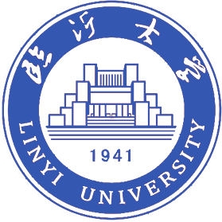
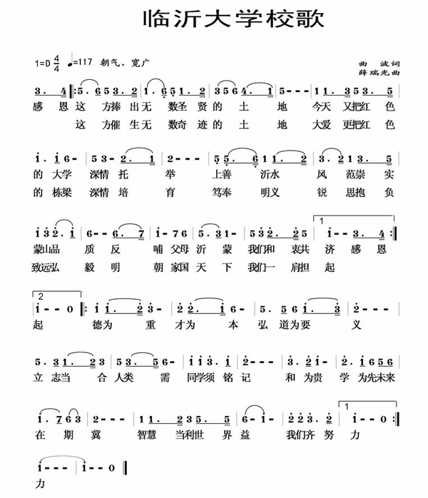

热门搜索
首页
学校概括
教学机构
管理机构
招生就业
新闻出版
学习资源
服务指南
专题网站
学校概括
首页 >
学校概括 >
校园精神
学校概括
校园简介
现任领导
校园精神
临沂概况
校园导游
校园风景

校标:以“临沂大学综合图书馆”、“临沂大学”、“临沂大学英文名称”和“1941”等主要设计元素构成。
临沂大学图书馆是学校的地标性建筑，其造型以沂蒙山区特有地貌“崮”为参照，形似巍峨蒙山，浩然大气，代表了沂蒙老区厚重的历史文化，宣扬了踏实、敦厚、坚定的精神风格； “山”字造型，表达了为沂蒙老区再造“知识蒙山”、“人文蒙山”、“精神蒙山”之意。综合图书馆下面的三条直线，象征贯穿沂蒙大地的沂河。蒙山沂水相映寓意“书山有路勤为径，学海无涯苦作舟”。“1941”代表着临沂大学的创建时间，体现出学校的历史底蕴和红色源头。
徽章设计图案昭示出临沂大学师生弘扬沂蒙精神、传承人类文明的历史使命感和创新创业、追求卓越时代责任感。
校风：实
“实”秉承了沂蒙人民的朴实民风、“沂蒙精神”的深刻内涵和党的“实事求是”的思想路线、“理论联系实际”的优良学风；“实” 充分体现了我校的办学实际与沂蒙区域特色；“实”不是功利意义的价值取向，而是人文精神与科学精神的有机统一，它既是融会于学校和师生中的一种氛围、风尚，也是一种境界、理念。“实”的校风激励全体师生要积极吸纳国内外一切文明成果，做人做事做学问要时时处处从实际出发，以求实的精神、朴实的作风、务实的态度、踏实的工作，与时俱进，敢为人先，追求卓越，努力建设高质量综合性品牌大学。
校训：明义 锐思 弘毅 致远
“明义 锐思 弘毅 致远”分别取自临沂籍圣贤颜真卿、刘洪、曾子、诸葛亮之语或赞其之语。
“明义”语出颜真卿《庙享议》：“此有以彰国家重本尚顺之明义，足为万代不易之令典也。”颜真卿为著名书法家，被誉为书法“亚圣”，一代忠勇名将（乾隆曾诗赞“忠以捐躯颜杲真”）。“明义”本为圣明的道义，后引申为深明大义。深明大义是沂蒙精神的深刻内涵之一。“明义”劝勉全体师生要从国家利益和民族精神出发，具备“大义”、“大爱”的优良品行和“大节”的崇高操守。
“锐思”语出《后汉书·律历志》刘昭注引《博物记》：“洪笃信好学，观乎六艺髃书意，以为天文数术，探赜索隐，钩深致远，遂专心锐思。”刘洪被誉为“算圣”。 “锐思”意为用心专一，具有敏锐的思想。“锐思”劝勉全体师生刻苦学习，深刻思考，努力探索自然和社会科学的精微深奥之理。
“弘毅”语出《论语·泰伯》：“曾子曰：士不可以不弘毅，任重而道远”曾子被誉为“宗圣”。“弘毅”，意为气象恢弘，意志坚强。“弘毅”劝勉全体师生要加强意志磨练，努力做到宽宏坚毅，锲而不舍。
“致远”，语出诸葛亮《诫子书》：“非淡泊无以明志，非宁静无以致远。”诸葛亮被誉为“智圣”。“致远”意为实现远大的抱负，是目标，更是一种追求。“致远”劝勉全体师生要有远大的理想和抱负，以矢志不渝的奋斗精神，锐意进取，不断开拓创新。
采用与临沂历史文化密切相关的文化名人所创造的重要理念组合而成的校训，富含传统文化积淀，具有鲜明的地域特征，体现了对民族优秀文化基因和沂蒙精神的传承。从整体上看，校训中的四个理念，涵盖了德育修养、学业追求、意志品质、人生理想等不同方面，它们彼此独立，又浑然一体，富有时代精神。
用书圣王羲之体书写的校训，将临沂五圣（书圣王羲之、书法亚圣颜真卿、算圣刘洪、宗圣曾子、智圣诸葛亮）融入校训，既传承文化，又弘扬精神。

临大学子
常用服务
学在临大
网络服务
青春校园
相关站点
教职员工
常用服务
校园信息
工作学习
网络服务
相关站点
毕业校友
今日临大
继续深造
学习服务
校园信息
相关站点
未来学生
招考指南
走进临大
地理位置
校园文化
其他站点
社会人士
学习深造
延揽人才
走进临大
校园信息
社会服务
相关站点